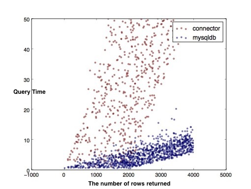

Python and MySQL
There are a lot of python driver available for MySQL and two stand out the most. The one, traditionally everybody’s choice, sort of industrial standard MySQLdb. It uses a C module to link to MySQL’s client library. For Python3, use PyMySQL instead, because MySQLdb don't support Python3. Oracle’s mysql-connector on the other hand is pure python so no MySQL libraries and no compilation is necessary.
MySQL Connector/Python
To use Python with MySQL, you can use the MySQL Connector/Python (Download Here). For those with anaconda, just install with conda:
conda install -c anaconda mysql-connector-python
MySQL Connector/Python includes support for:
- Almost all features provided by MySQL Server.
- Converting parameter values back and forth between Python and MySQL data types.
- All MySQL extensions to standard SQL syntax.
import re
import mysql.connector
# establishes the connection to MySQL.
cnx = mysql.connector.connect(user='root', password='8032804254qq',
host='127.0.0.1', database='rookery', port='3306')
# creates a cursor object (cur) to use for executing queries on the database.
cur = cnx.cursor(buffered=True)
# query mysql database for list of user accounts
sql_stmnt = "SELECT DISTINCT User, Host FROM mysql.db "
sql_stmnt += "WHERE Db IN('rookery','birdwatchers') "
sql_stmnt += "ORDER BY User, Host"
cur.execute(sql_stmnt)
# loop through list of user accounts
for user_accounts in cur.fetchall():
user_name = user_accounts[0]
host_address = user_accounts[1]
user_account = user_name.decode('utf-8') + "@" + host_address.decode('utf-8')
# display user account heading
print('User Account:', (user_name, host_address))
print("------------------------------------------")
# query mysql for grants for user account
sql_stmnt = "show grants for " + user_account
cur.execute(sql_stmnt)
# loop through grant entries for user account
for grants in cur.fetchall():
# skip 'usage' entry
if re.search('USAGE', grants[0]):
continue
# extract name of database and table
dbtb = re.search('ON\s(.*)\.+?(.+?)\sTO', grants[0])
db = dbtb.group(1)
tb = dbtb.group(2)
# change wildcard for tables to 'all'
if re.search('\*', tb): tb = "all"
# display database and table name for privileges
print("database: ", db, "table: ", tb)
# extract and display privileges for user account # for database and table
privs = re.search('GRANT\s(.+?)\sON', grants[0])
print('privileges: ', privs.group(1))
cur.close()
cnx.close()
PyMySQL
PyMySQL is to be a drop-in replacement for MySQLdb and work on CPython, PyPy and IronPython.
Installation
$ pip install PyMySQL
Example
import pymysql
# connect to the datacase
connection = pymysql.connect(host='localhost', user='root', password='8032804254qq', db='test')
with connection.cursor() as cursor:
"""
Create Table | CREATE TABLE `books` (
`book_id` int(3) NOT NULL AUTO_INCREMENT,
`title` text DEFAULT NULL,
`status` bit(1) DEFAULT b'0',
PRIMARY KEY (`book_id`)
) ENGINE=MyISAM AUTO_INCREMENT=103 DEFAULT CHARSET=utf8
"""
# create a new record
sql = "INSERT INTO `books` (`title`, `status`) VALUES (%s, %s)"
cursor.execute(sql, ('GRE Reading', 1))
# connection is not autocommit by default. So you must commit to save your changes.
connection.commit()
with connection.cursor() as cursor:
sql = "select `book_id`, `title`, `status` from `books`"
cursor.execute(sql)
# read records
for book in cursor.fetchall():
book = list(book)
book[2] = ord(book[2])
print(book)
Difference? which is better?
MySQLdb is a thin python wrapper around C module which implements API for MySQL database.
MySQL Connectoris a Python module that reimplements the MySQL Database API in Python. It is written in Python and does not have any dependencies except for the Python Standard Library. It is slower, but does not require the C library and so is more portable.
Query Performance
Obviously, MySQLdb has better performance, especially when it comes to large data sets.

Reference
1.The differences between MySQLdb and mysqlconnector
2.Python MySQLdb vs mysql-connector query performance
3. PyMySQL evaluation
MySQL(1): Introduction
- client and server
- basic command
- GUI
- auto-completion and syntax highlighting
- Starting to Explore Databases
MySQL is an open source, multithread, relational database management system.
client and server
The server maintains, controls and protects your data, storing it in files on the computer where the server is running in various formats. It listens for requests from client.
For MySQL, mysqld(the d stands for daemon) is the server. mysql is a standard MySQL client. With its text-based interface, a user can log in and execute SQL queries.
basic command
- The
mysql_safescript is the most common way to startmysqld, because this script can restart the daemon if it crashes. - The
mysqlaccesstool creates user accounts and sets their privileges. - The
mysqladminutility can be used to manage the database server itself from the command-line. - The
mysqlshowtool may be used to examine a server’s status, as well as information about databases and tables. - The
mysqldumputility is the most popular one for exporting data and table structures to a plain-text file, known as adumpfile. - The command
mysql -u root -pis usually used to start the clientmysql, after which the passport should be filled. - The command
mysql -u root -p -e "SELECT User,Host FROM mysql.user;"gives a list of username and host combination on the server.
GUI
Sequel Pro is a fast, easy-to-use Mac database management application for working with MySQL databases. see detail in Chinese
WorkBench provides data modeling, SQL development, and comprehensive administration tools for server configuration, user administration, backup, and much more.
Although GUIs are easy-to-use, in the long run they're not useful. The text-based mysql client causes you to think and remember more, and it's not that difficult to use or confusing. And the command-line method of using mysql allows you to interact with the server without much overhead.
``
auto-completion and syntax highlighting
Mycli is a command-line interface which support MariaDB, MySQL with auto-completion and syntax highlighting.

Starting to Explore Databases
For each of SQL statements, we heave to specify the database name. If you will be working mainly in one database, you can set the default database so that you don't have to specify the database each time:
USE database_name
Reference
- Russell T D. 2015. Learning MySQL and MariaDB. O'REILLY.


MySQL (2): Database and SQL
- Database
- Primary key
- SQL
- Concepts
- SQL syntax rules
- List of SQL commands
- SQL Operators
- Functions
- Subqueires
- Joining Tables
- Backing up and Restoring
- Resources
Database
A Database is a collection of data that is organized in a manner that facilitates ease of access, as well as efficient management and updating.
A database is made up of tables that store relevant information. Databases often contain multiple tables, each designed for a specific purpose.
Primary key
A primary key(主键) is a field in the table that uniquely identifies the table records.
The primary key's main features:
- It must contain a unique value for each row.
- It cannot contain
Nullvalues. - Tables are limited to One primary key each.
- The primary key's value must be different for each row.
SQL
SQL, Structured Query Language(结构化查询语言), is a programming language designed to manage data stored in relational databases(关系数据库).
SQL operates through simple, declarative statements. This keeps data accurate and secure, and helps maintain the integrity of databases, regardless of size.
SQL is used to access and manipulate a database, MySQL is a program that understands SQL.
SQL can:
- Insert, update, or delete records in a database.
- Create new databases, tables, stored procedures, views.
- retrieve data from a database, etc.
Common Data types in SQL are Integer, Text, Date, and Real.
A Null value in SQL represents missing or unknown data.
Concepts
- A
relational databaseis a database that organizes information into one or more tables. - A
tableis a collection of data organized into rows and columns. Tables are sometimes referred to asrelations. - A
columnis a set of data values of a particular type. - A
rowis a single record in a table. - A
statementis text that the database recognizes as a valid command. Statements always end in a semi-colon ; The structure of SQL statements vary. The number of lines used do not matter. A statement can be written all on one line, or split up across multiple lines if it makes it easier to read. Clausesin astatementperform specific tasks in SQL. By convention, clauses are written in capital letters. Clauses can also be referred to ascommands.- A
fully qualified nameputs the table name prior to the column name, by separating them a dot. E.g. customer.City. It is especially useful with multiple tables that may share the same column names.
SQL syntax rules
SQL allows to run multiple queries or commands at the same time. We should end each SQL statement with a semicolon to indicate that the statement is complete and ready to be interpreted.
SQL is case insensitive.
A single SQL statement can be placed on one or more text lines. In addition, multiple SQL statements can be combined on a single text line.
NOTE
List of SQL commands
Glossary of commonly used SQL commands:
ALTER TABLE
ALTER TABLE table_name ADD column datatype;
ALTER TABLE lets you add columns to a table in a database.
AND
SELECT column_name(s)
FROM table_name
WHERE column_1 = value_1
AND column_2 = value_2;
AND is an operator that combines two conditions. Both conditions must be true for the row to be included in the result set.
AS
SELECT column_name AS 'Alias'
FROM table_name;
AS is a keyword in SQL that allows you to rename a column or table using an alias.
AVG
SELECT AVG(column_name)
FROM table_name;
AVG() is an aggregate function that returns the average value for a numeric column.
BETWEEN
SELECT column_name(s)
FROM table_name
WHERE column_name BETWEEN value_1 AND value_2;
The BETWEEN operator is used to filter the result set within a certain range. The values can be numbers, text or dates.
COUNT
SELECT COUNT(column_name)
FROM table_name;
COUNT() is a function that takes the name of a column as an argument and counts the number of rows where the column is not NULL.
CREATE TABLE
CREATE TABLE table_name (column_1 datatype, column_2 datatype, column_3 datatype);
CREATE TABLE creates a new table in the database. It allows you to specify the name of the table and the name of each column in the table.
DELETE
DELETE FROM table_name WHERE some_column = some_value;
DELETE statements are used to remove rows from a table.
GROUP BY
SELECT COUNT(*)
FROM table_name
GROUP BY column_name;
GROUP BY is a clause in SQL that is only used with aggregate functions. It is used in collaboration with the SELECT statement to arrange identical data into groups.
INNER JOIN
SELECT column_name(s) FROM table_1
JOIN table_2
ON table_1.column_name = table_2.column_name;
An inner join will combine rows from different tables if the join condition is true.
INSERT
INSERT INTO table_name (column_1, column_2, column_3) VALUES (value_1, 'value_2', value_3);
INSERT statements are used to add a new row to a table.
LIKE
SELECT column_name(s)
FROM table_name
WHERE column_name LIKE pattern;
LIKE is a special operator used with the WHERE clause to search for a specific pattern in a column. SQL pattern matching enables you to use _ to match any single character and % to match an arbitrary number of characters (including zero characters).
LIMIT
SELECT column_name(s)
FROM table_name
LIMIT number;
LIMIT is a clause that lets you specify the maximum number of rows the result set will have.
MAX
SELECT MAX(column_name)
FROM table_name;
MAX() is a function that takes the name of a column as an argument and returns the largest value in that column.
MIN
SELECT MIN(column_name)
FROM table_name;
MIN() is a function that takes the name of a column as an argument and returns the smallest value in that column.
OR
SELECT column_name
FROM table_name
WHERE column_name = value_1
OR column_name = value_2;
OR is an operator that filters the result set to only include rows where either condition is true.
ORDER BY
SELECT column_name
FROM table_name
ORDER BY column_name1, column_name2 ASC|DESC;
ORDER BY is a clause that indicates you want to sort the result set by a particular column either alphabetically or numerically.
OUTER JOIN
SELECT column_name(s) FROM table_1
LEFT JOIN table_2
ON table_1.column_name = table_2.column_name;
An outer join will combine rows from different tables even if the the join condition is not met. Every row in the left table is returned in the result set, and if the join condition is not met, then NULL values are used to fill in the columns from the right table.
ROUND
SELECT ROUND(column_name, integer)
FROM table_name;
ROUND() is a function that takes a column name and an integer as an argument. It rounds the values in the column to the number of decimal places specified by the integer.
SELECT
SELECT column_name FROM table_name;
SELECT statements are used to fetch data from a database. Every query will begin with SELECT.
SELECT DISTINCT
SELECT DISTINCT column_name FROM table_name;
SELECT DISTINCT specifies that the statement is going to be a query that returns unique values in the specified column(s).
SUM
SELECT SUM(column_name)
FROM table_name;
SUM() is a function that takes the name of a column as an argument and returns the sum of all the values in that column.
UPDATE
UPDATE table_name
SET some_column = some_value
WHERE some_column = some_value;
UPDATE statments allow you to edit rows in a table.
WHERE
SELECT column_name(s)
FROM table_name
WHERE column_name operator value;
WHERE is a clause that indicates you want to filter the result set to include only rows where the following condition is true. eg. SELECT * FROM customers WHERE ID=7;
SQL Operators
Comparison Operators and Logical Operators are used in the WHERE clause to filter the data to be selected.
Comparison Operators
The following comparison operators can be used in the WHERE clause:
| Operator | Description |
|---|---|
| = | Equal |
| != | Not equal |
| > | Greater than |
| < | Less than |
| >= | Greater than or equal |
| <= | Less than or equal |
| BETWEEN | Between an inclusive range |
BETWEEN Operator:
SELECT * FROM customers
WHERE ID BETWEEN 3 AND 7;
Logical Operators
Logical operators can be used to combine two Boolean values and return a result of true, false, or null.
The following operators exists in SQL:
| Operator | Description |
|---|---|
| AND | TRUE if both expressions are TRUE |
| OR | TRUE if either expression is TRUE |
| IN | TRUE if the operand is equal to one of a list of expressions |
| NOT | Returns TRUE if expression is not TRUE |
The IN Operator:
SELECT * FROM customers
WHERE City IN ('New York', 'Los Angeles', 'Chicago');
The NOT IN Operator:
SELECT * FROM customers
WHERE City NOT IN ('New York', 'Los Angeles', 'Chicago');
Functions
The UPPER function converts all letters in the specified string to uppercase.
The LOWER function converts the string to lowercase.
The following SQL query selects all Lastnames as uppercase:
SELECT FirstName, UPPER(LastName) AS LastName
FROM employees;
The SQRT function returns the square root of given value in the argument.
Similarly, the AVG function returns the average value of a numeric column.
The SUM function is used to calculate the sum for a column's values.
The MIN function is used to return the minimum value of an expression in a SELECT statement.
E.g. you might wish to know the minimum salary among the employees:
SELECT MIN(salary) AS Salary FROM employees;
Subqueires
A subquery is a query within another query. Enclose the subquery in parentheses.
E.g.
SELECT FirstName, Salary FROM employees
WHERE Salary > (SELECT AVG(Salary) FROM employees)
ORDER BY Salary DESC;
Joining Tables
SQL can combine data from multiple tables. In SQL, 'joining tables' means combining data from two or more tables. A table join creates a temporary table showing the data from the joined tables.
To join tables, specify them as a comma-separated list in the FROM clause:
SELECT customers.ID, customers.Name, orders.Name, orders.Amount FROM customers, orders
WHERE customers.ID = orders.Customer_ID
ORDER BY customers.ID
Types of Join
The following are types of JOIN that can be used in SQL:
INNER JOIN: returns rows when there is a match between the tables.LEFT JOIN: returns rows from the left table, even if there are no matches in the right table.
SELECT table1.column1, table2.column2...
FROM table1 LEFT JOIN table2
ON table1.column_name = table2.column_name;
If no match is found for a particular row,NULLis returned.
RIGHT JOINJust likeLEFT JOIN
Backing up and Restoring
Backing up
mysqldump -u user -p database_name > /data/backups/all-dbs.sql
Restoring
mysql -u user -p < all-dbs.sql
Resources

Copyright © 2017